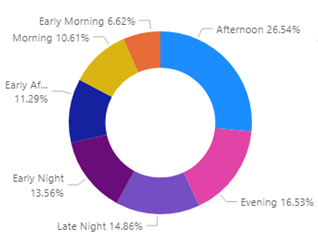
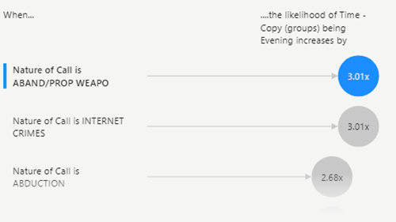
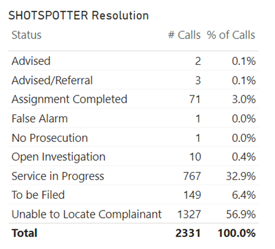
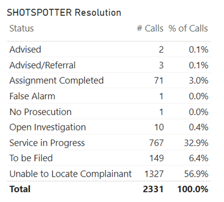
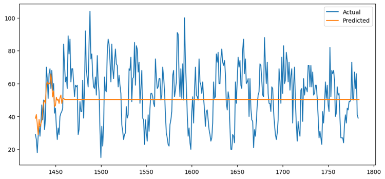
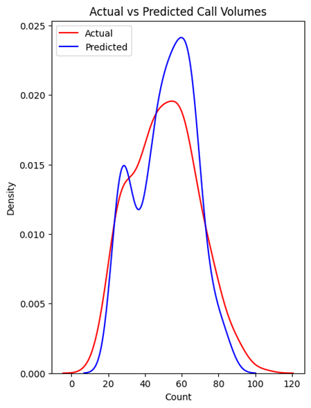
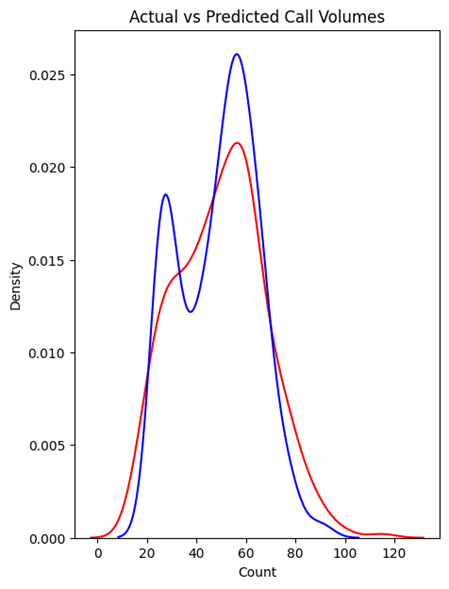

An Analysis of Resource Allocation by Milwaukee Police Department
Gabby Fike, Rajib Alam, Eric Bryniarski, Caldwell Gluesing, Christian Schwartz, Rebecca Mathew, and Violet Wang
Abstract
This paper presents an analysis of resource allocation by the Milwaukee Police Department (MPD) and proposes a model to help allocate limited resources more efficiently. The study uses the geospatial and efficacy of the ShotSpotter system data to analyze the current resource allocation strategy of the MPD. Previous research on predictive policing and related fields is reviewed, and the data and methodology used for this study are described, including data collection and cleaning, data profiling, and predictive modeling. Three predictive models are developed to predict the number of call volumes based on the day of the week and the hour of the day, using moving average, multiple linear regression, and random forest regression methods. Finally, the paper describes the publication of a website and interactive map that visualizes the call density in Milwaukee, using 2D Kernel Density Estimation (2DKDE). The proposed model can help the MPD allocate more resources on hours and days with a higher probability of calls, leading to more efficient resource allocation and improved social safety.
Keywords
MPD, ShotSpotter, Geospatial, Nature of call, Predictive model
Introduction
The Milwaukee Police Department (MPD) is tasked with ensuring public safety with limited resources at their disposal. As such, there is a need to optimize the allocation of resources to maximize their effectiveness. This paper delves into the issue by examining the current resource allocation strategy of the MPD and proposing a model to improve its efficiency. The study uses two main methods to gather and analyze data—by reviewing how the data appears geospatially and by considering the efficacy of the ShotSpotter system by way of comparing it to regular civilians calling in. These methods provide valuable insights into the current resource allocation strategy, allowing for the identification of areas that require more resources. The proposed predictive model uses time data to predict the number of calls at a specific hour on a given day of the week, which can help the MPD allocate their resources more effectively. The model has the potential to improve public safety outcomes while also making the best use of limited resources. Ultimately, this paper seeks to provide a valuable resource for the MPD and other law enforcement agencies grappling with resource allocation issues.
Related Works
Much research has been performed on predictive policing and related fields because of its utmost importance to social safety. Through effective research and predictive modeling, the response time to 911 calls for service or crimes can be dramatically reduced, and resource allocation can also be improved. Research conducted by Chohlas-Wood et al. (2015) using 911 call data in New York City focused on improving the resource allocation of the New York Police Department (NYPD) by analyzing temporal call behavior, creating a predictive model, and event detection. This research focused on random forest regression and Poisson regression for the predictive model and found that random forest regression performed better. They also used data relating to geographical areas and time windows to help NYPD allocate resources where they are most needed (Chohlas-Wood et al., 2015). Similar research was also conducted in the city of Cleveland to describe effective forecasting models that can assist the Cleveland Police Department with staffing during peak crime hours. They concluded that a multiple regression model using temperature, day of the week, hour of the day, and intervention variables for holidays produced the best result with an accuracy of over 90%. They also built models using the moving average method (MA) and autoregressive integrated moving average method (ARIMA) for forecasting. However, they performed comparatively poorly despite their higher ability to forecast time series (Holcomb & Sharpe, 2006). However, the huge potential of optimizing policing strategies using 911 call data remains largely untapped due to non-uniform protocols, codes, and formats of data (The 911 Call Processing System, 2022).
Data and Methodology
Data collection and cleaning
The Milwaukee Police Department (MPD) publishes a summary of Calls for Service made to the 911 operators that were dispatched to the MPD on a website. This data is updated every 5 minutes on the website. For this project, a Python script was set up so that this data is collected from the website and stored in a database hosted on a Marquette University server every 10 minutes. The collected data includes call number, date and time, location, police district, nature of the call, and status for each record. As part of data cleaning, steps were taken to make sure no duplicated record is inserted into the database. After collecting over 100,000 records over 3 months, the data was used for the analysis of policing strategies of the MPD and predictive modeling. Additionally, the Nominatim, a geocoding API, was used to obtain the ZIP code, latitude, and longitude of the location of each record, which was saved to the database for later use.
Data Profiling
Considerable time was spent to understand the collected data in depth. For example, as part of the initial analysis, a comprehensive list of the nature of calls was obtained with their associated meaning. Later, these call types were divided into three groups—non-crime, non-violent crime, and violent crime. Again, the time of the day was split into early morning, morning, early afternoon, afternoon, evening, early night, and late night for ease of analysis. Power BI was used as an analytical tool to easily visualize the data and trends. According to Power BI, there are more chances of getting a call in the afternoon and the evening.
 Predictive Modeling
Three predictive models using moving average, multiple linear regression, and random forest regression had been developed to predict the number of call volumes based on the day of the week and the hour of the day. The “Date/Time” column in the database was used to find out the weekday for every record. The same column was also used to find the hour of the day each call for service was recorded. Finally, the data were aggregated by the day and the hour to get the total count of calls for service in a day at a specific hour. Note that for the model that forecasts call volume using the moving average, the weekday column was dropped to make it a univariate forecasting and to improve the model's accuracy. On the other hand, both predictor variables – the weekday and hour were used as categorical variables in the multiple linear regression model for its easier interpretation. Hence, six dummy variables in the form of 0 and 1 were used to encode the weekday information. Similarly, the hour information was encoded using twenty-three dummy variables. Again, random grid search and parameter-based grid search were used to fine-tune the hyperparameters of the random forest regression model to find the best fit.
Publication of Website and Interactive Map
2DKDE, also known as 2D Kernel Density Estimation, was used to estimate call density at each latitude & longitude location in the interactive map. It is used to plot call density as a color on each point. A model was trained on all points and then evaluated at each point to get color/call density for that point. Some calls were determined to be administrative calls; hence, they were excluded because their volume is so much larger than other calls that it oversaturates all the other points. Additionally, calculations had to be done to find the maximum so that the density can be normalized, and it exists on [0,1]. This interactive map can thus display various analytical information based on user input, and both the map and website can be viewed at: https://mpdcscapstone.cs.mu.edu/
Discussion and Result
The findings and results are described below:
Geospatial Analysis
Once the data cleaning and profiling were complete, many avenues of analysis were explored. The first one, being the most perfunctory and more akin to data profiling than anything, was the analysis of the data geospatially. With linear regression and 2DKDE, we plotted the points where the calls take place and colored the points based on density. We also pulled the line strings that represent the street for the map to stay together to visually understand the data.
ShotSpotter Analysis
As one of the goals of this project is to consider the allocation of MPD, to even begin to form a conclusion as to the efficacy of ShotSpotter when compared to simply a civilian calling in and claiming that a shot was fired, our group created a Power BI dashboard that cataloged the “Status” of Natures of Calls that claimed to be “Shots Fired” versus Natures of Calls that came directly from the ShotSpotter itself.
 

Figure: Shots Fired Resolutions VS ShotSpotter Resolutions
Especially when looking at the “Assignment Completed Row,” it seems that civilian calls for shots fired had 4.7% of their assignments completed versus the only 3.0% for calls brought in by the ShotSpotter system. A very simple comparison metric such as this may imply that ShotSpotters do not necessarily facilitate a higher percentage of completed assignments when it comes to their intended purpose: detecting shots fired. It’s also interesting to note that civilian calls had a lower number of “Unable to Locate Complaint” statuses, totaling only 45.1% of total calls, as opposed to ShotSpotter’s 56.9% of the same metric. Considering that the reasoning behind installing the ShotSpotter system was to assist the MPD in locating shots fired, our data suggests that it is less effective than having civilians reporting shots fired themselves. Additionally, it appears that other equally important statistics, such as “Service in Progress”—as in the situation of potential shots being fired is currently being serviced—have lower percentages when taken in tandem with the ShotSpotter system and not civilian call-ins. Reviewing all of our observations may allude to the conclusion that employing ShotSpotters in the city of Milwaukee has yet to increase the efficiency of police officers when it comes to resolving calls and detecting of shots being fired.
Forecasting call volume
The predictive models built for this paper largely depend on the time of the calls to predict the call volume. However, since time series forecasting requires a large number of data points to train a good model, the performance of these models is not satisfactory. Nevertheless, such models, with more data points and more features can be crucial in resource allocation for the MPD.
I. Moving Average Forecasting
Moving average models need the data to be stationary, which means it should have a near-constant variance and mean through time (Howell, 2023). The call volume data for this project appeared to be stationary in a line graph. Then, it was observed in the autocorrelation correlogram that 33 is the last significant lag. Therefore, 33 was chosen to be the order of the model. Consequently, the data was split into training and test data, and the model was fitted using the training data. However, after predicting the call volume on the test data, the model was found to be performing very poorly with a low accuracy of 68.96% with an average error of 14.1665 degrees. The prediction plot further proves that the model performs badly when predicting future values.
Figure: Actual Vs Predicted Call Volumes for Moving Average Model
II. Multiple Linear Regression
Multiple linear regression can estimate the relationship between two or more independent variables and one dependent variable. In this scenario, two categorical predictor variables – hour of the day and day of the week were used to predict the call volume. After the dataset was split into training and test data, the linear regression model was trained using the sklearn package. After making predictions on the test data using this model, it was found that the model had an accuracy of 82.4% with an average error of 7.6653 degrees. This improvement can also be observed in the actual vs prediction density plot.
III. Random Forest Regression
The random forest algorithm creates multiple random decision trees based on the data and averages the results to get a new result, eventually leading to better prediction. Since random forest regression has many different possible combinations of hyperparameters, at first random search cross-validation was used to get an initial idea of their values, and then using a grid search cross-validation on a narrower range, the best values were selected. The final model had 50 decision trees with a maximum of 70 levels in each decision tree, a maximum of 2 features for splitting a node, a minimum of 5 data points placed in a node before splitting, and a minimum of 8 data points allowed in a leaf node (Koehrsen, 2019). This model produced an accuracy of 85% with an average error of 6.96 degrees, which is the best among these three models.
Figure: Density plot for MLR model Figure: Density Plot for Random Forest Regression
 Figure: Density plot for MLR model. Figure: Density Plot for Random Forest Regression.
Overall, the random forest regression model performed the best although there is room for much improvement. For example, the location data was not used in the predictive model. Adding location data such as latitude, longitude, ZIP code, and census tract ID can help the MPD identify the geographical area where they should allocate more resources. Again, the weather data can also be added as it correlates with calls for service data. Most importantly, the models need more datasets to identify the trends and seasonality of the data. For reference, Holcomb, and Sharpe (2006) used approximately 5 million records for calls for service to train their models compared to little over 100 thousand records for this project.
Conclusion
The goal of this project was to understand the calls for service data of the MPD and use it to analyze their policing strategy and efficiency. The paper focused on the geospatial analysis and the ShotSpotter program analysis to evaluate the resource allocation of the MPD. It was found that the MPD should reevaluate the efficiency of the ShotSpotter program and its geographical locations because very few calls for ShotSpotter ended up in completed assignments, but the city has spent nearly $3.7 million on the program over the last 13 years (Jenz, 2023). In the end, some predictive models were also proposed to improve their resource allocation in the future. However, the models can be further improved in the future, by training them with more data points and adding more important features (predictor variables) to the models. In conclusion, the policing strategy of the MPD is decent, but more efforts need to be made to better allocate the resources to minimize the response time to calls for service to make Milwaukee a safer city. In conclusion, the policing OPD resource is great but it needs improvement so it will be accurate in the future.
References
Chohlas-Wood, A., Merali, A., Reed, W. D., & Damoulas, T. (2015). Mining 911 Calls in New York City: Temporal Patterns, Detection and Forecasting. In National Conference on Artificial Intelligence. http://aaai.org/ocs/index.php/WS/AAAIW15/paper/view/10206
Holcomb, J. B., & Sharpe, N. R. (2006). Forecasting Police Calls during Peak Times for the City of Cleveland. Mathematics Faculty Publications, 1(1), 47–53. https://engagedscholarship.csuohio.edu/cgi/viewcontent.cgi?article=1010&context=scimath_facpub
Howell, E. (2023, January 23). How To Forecast With Moving Average Models - Towards Data Science. Medium. https://towardsdatascience.com/how-to-forecast-with-moving-average-models-6f3c9cbba60d
Jenz, T. (2023). Milwaukee Police Use ShotSpotter Technology to Locate Gunshots. Shepherd Express. https://shepherdexpress.com/news/features/milwaukee-police-use-shotspotter-technology-to-locate-gunsho/
Koehrsen, W. (2019, December 10). Hyperparameter Tuning the Random Forest in Python - Towards Data Science. Medium. https://towardsdatascience.com/hyperparameter-tuning-the-random-forest-in-python-using-scikit-learn-28d2aa77dd74
The 911 Call Processing System. (2022, June 10). Vera Institute of Justice. https://www.vera.org/publications/911-call-processing-system-review-of-policing-literature